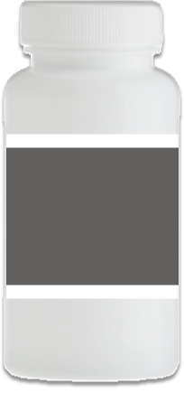
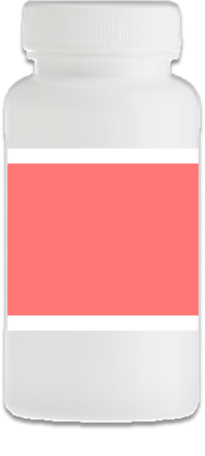
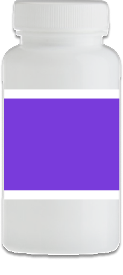

Medicatie dat helpt tegen ADHD / ADD
Naast gedragstherapie en andere behandelingen, zijn er ook een aantal soorten medicatie die kunnen helpen. De werking verschilt per persoon. De één heeft baat bij Dexamfetamine, de ander juist bij Methylfenidaat. Hieronder, door te klikken op de verschillende potjes, worden de positieve effecten en bijwerkingen genoemd.

- Bevordert afgifte dopamine en noradrenaline in de hersenen, waardoor het makkelijker is om de aandacht vast te houden.
- In tabletten of capsules verkrijgbaar.
Bijwerkingen:
- Problemen krijgen met slapen.
- Minder eetlust en misselijk voelen.
- Buikpijn, hartkloppingen en / of hoofdpijn.
- Rusteloos, nerveus en / of angstig worden.

- Remt heropname dopamine en noradrenaline.
- Verbetert de stemming, werkt opwekkend en zorgt voor een verbeterde aandachtsspanne.
- In tabletten of capsules verkrijgbaar.
Bijwerkingen:
- Minder eetlust en misselijk voelen.
- Buikpijn en hoofdpijn.
- Rusteloos, slapeloos, nerveus en / of duizelig worden.

- Verbetert de aandachtsspanne en concentratie.
- Je wordt wat rustiger.
Bijwerkingen:
- Suf, slaperig en moe.
- Buikpijn en hoofdpijn
- Minder eetlust en misselijk worden
- Emotionele wisselingen